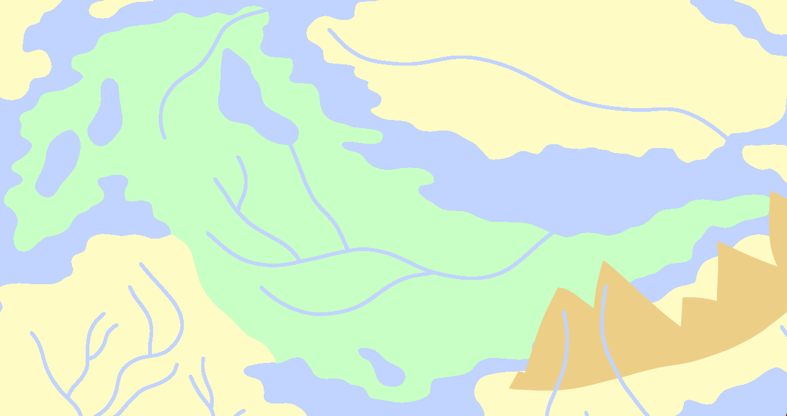
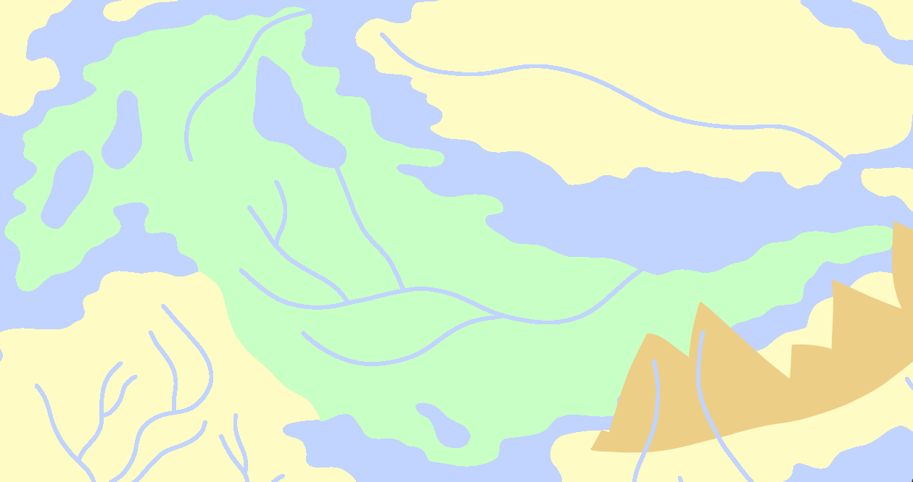

Sanguinal
Among the most striking physical features of Sanguinal are the red deserts found across the region. These red deserts are some of the hottest places in all of Karvaea, with their only real competition being the swamps of Calla or the rainforests of Aquatos. While other places in Karvaea are hot and humid, Sanguinal is hot and dry.
Fishing has become a surprisingly powerful industry in Sanguinal, with the only bottleneck for its success globally being the actual transport of fish. Even with water and wind magic, moving fish across vast distances in Sanguinal has proven difficult, and more often than not leads to rot. However, this has allowed the region to attract food tourists in search of regional cuisine.
Close